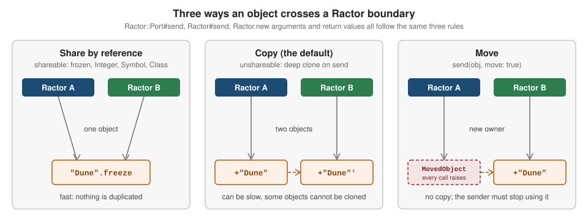

Ractors
|
This content was generated with the assistance of AI and should be verified against the official documentation before being relied on in production. |
This page is written against Ruby 4.0 (4.0.7, checked on 2026-10-18); features newer than Ruby 3.0 name the version that introduced them.
A Ractor is Ruby’s actor-like unit of parallelism: a Ractor runs Ruby code at the same time as other Ractors on other cores,
and it does so without data races because Ractors may not share mutable objects. Everything a Ractor knows is either
private to it, immutable and therefore shareable, or handed to another Ractor by an explicit message. That bargain removes
the global VM lock (the GVL) as a bottleneck at the price of strict rules about which objects, constants and class-level
state a non-main Ractor may touch. This page explains the rules, the Ruby 4.0 message API built on Ractor::Port, the
language restrictions, the patterns that work (worker pools, pipelines, fork-join, retry), the limits, and what changed
from the Ruby 3.x API that older articles still describe.
Ractors are still experimental in Ruby 4.0. The first Ractor.new in a process prints a warning, the API changed
incompatibly between Ruby 3.4 and 4.0, and the Ruby 4.0 NEWS describes the release as bringing the implementation "closer to
leaving experimental status", not as having left it. Treat the API as a moving target and pin your Ruby version when you use it.
Threads, which Ractors are compared with throughout, are covered in
Threads and the GVL; fibers and the fiber scheduler, the other
concurrency tool for I/O-bound programs, in
Fibers and the Fiber Scheduler. Deep freezing and what
freeze really does are in
Object Lifecycle, Freezing and Copying; how blocks
capture variables in Blocks, Procs and Lambdas; the exception
class hierarchy in Exceptions and Error Handling; the
scope rules for constants and globals in Variables,
Constants and Scope; and the C-extension side of Ractor safety in
C Extensions, FFI and WebAssembly. Other languages
solve the same problem differently; compare
Go goroutines and
Rust threads and message passing.
Every example on this page was syntax-checked with ruby -wc, run on Ruby 4.0.7 and linted with RuboCop 1.92 using the
configuration of the running shelf gem (target Ruby 4.0, double-quoted strings). The output shown in # =>
comments, and in the output blocks, is the real output; the exceptions are two examples that run on Ruby 3.4 to show the
old API, and they say so. Most examples switch the experimental warning off with Warning[:experimental] = false to keep
the output readable; the first one leaves it on so that you can see it.
Status and the experimental warning
What Ruby prints
Creating the first Ractor in a process emits a warning in the :experimental category. Ruby 4.0 words it differently from
Ruby 3.0 to 3.4:
| Ruby | Warning text on the first Ractor.new |
|---|---|
3.0 to 3.4 |
|
4.0 |
|
The warning is printed once per process, when the first Ractor is created (while the main Ractor is still the only one),
and it is reported at the caller’s line with uplevel: 0. Unlike deprecation warnings, the :experimental category is
enabled by default, so you see it without -w. Three ways to silence it, from narrowest to widest:
-
Warning[:experimental] = falsebefore the firstRactor.new, which is what the examples on this page do. -
-W:no-experimentalon the command line, orRUBYOPT=-W:no-experimentalin the environment, which also silences other experimental features. -
-W0, which silences every warning and is rarely a good idea.
Silencing the warning does not make the API stable; it only removes the reminder. In a library, do not silence it on behalf of your callers.
# frozen_string_literal: true
# The first Ractor.new call in a process prints the experimental warning.
greeter = Ractor.new { "Hello from a ractor" }
greeter.value # => "Hello from a ractor"
greeter.inspect.match?(/\A#<Ractor:#\d+ ex01_first.rb:4 terminated>\z/) # => true
Ractor.main? # => true
Ractor.count # => 1
Ractor.current.equal?(Ractor.main) # => true
Ractor.new { Ractor.main? }.value # => falseOutput (the experimental warning goes to standard error):
ex01_first.rb:4: warning: Ractor API is experimental and may change in future versions of Ruby.Ractor.new is implemented in Ruby, and its source in the 4.0 documentation shows the warning being issued with
category: :experimental when ruby_single_main_ractor is still true. Ractor.count returns the number of Ractors that
are running or waiting, including the main one. Each Ractor reports its identity through inspect as
#<Ractor:#2 file.rb:4 terminated>: a per-process number (the main Ractor is #1), an optional name, the file and line
of the Ractor.new call and a status such as running or terminated.
What Ruby 4.0 changed
The Ruby 4.0 NEWS lists these Ractor changes:
-
Ractor::Portwas added as a new synchronization mechanism (Feature #21262), withreceive,send(alias<<),closeandclosed?. -
Ractor.yieldandRactor#takewere removed because ports replace them, together withRactor#close_incomingandRactor#close_outgoing. -
Ractor#joinandRactor#valuewere added to wait for termination, likeThread#joinandThread#value. -
Ractor#monitorandRactor#unmonitorwere added as the low-level interface behindjoin. -
Ractor.selectnow accepts only Ractors and ports; given Ractors, it returns when one terminates. -
Ractor#default_portwas added: every Ractor has a default port, used byRactor.receiveandRactor#send. -
Ractor.shareable_procandRactor.shareable_lambdawere introduced (Feature #21550, Feature #21557). -
Stability and performance work: lock-free structures for frozen strings and the symbol table, lock-free method-cache lookups in most cases, per-Ractor allocation counters, fixes for deadlocks when mixing Ractors and threads, for
requireandautoloadinside a Ractor, and for transcoding across Ractors.
Ractor.receive_if also no longer exists in 4.0.7: it is present in Ruby 3.4 and Ractor.methods on 4.0 does not list it,
although the NEWS does not mention it. Check with Ractor.respond_to?(:receive_if) before relying on an old article.
Earlier releases added: Ruby 3.0 introduced the class and the shareable_constant_value magic comment; 3.1 let non-main
Ractors read class and module instance variables whose values are shareable; 3.3 enabled the M:N thread scheduler for
threads inside non-main Ractors; 3.4 added Ractor.main?, Ractor.[] and Ractor.[]= (ractor-local storage),
Ractor.store_if_absent, Ractor._require and allowed require inside a Ractor. See Version notes.
Why Ractors exist
The GVL and what a Ractor changes
CRuby (the reference implementation) runs Ruby code under a global VM lock, usually called the GVL. All threads of a Ruby process take turns holding it, so two threads never execute Ruby bytecode at the same instant: threads overlap I/O waits but not computation (see Threads and the GVL). The cost of the lock is that a CPU-bound Ruby program uses one core no matter how many threads it starts.
A Ractor is the escape hatch. The documentation puts the rules in four sentences:
-
A Ruby process starts with one Ractor, the main Ractor. When it ends, every other Ractor is asked to terminate, like threads.
-
Each Ractor contains one or more threads, and the GVL is held per Ractor. Threads in the same Ractor still run one at a time; threads in different Ractors can run in parallel.
-
Creating a Ractor costs slightly more than creating a thread.
-
Ractors do not share all objects, so there are no data races between them, only between the threads of one Ractor, for which you still need a
Mutex.
The consequence for the design of programs is that parallelism is opt-in and explicit. Pure Ruby CPU-bound work (parsing,
checksums, compression written in Ruby, simulation) is the target. I/O-bound work is better served by threads or by
non-blocking fibers, and independent OS processes (fork, Process.spawn) remain the most isolated tool of all; see
Processes, Signals and the Shell.
| Tool | Parallel Ruby execution | Shares objects | Isolation | Best suited to |
|---|---|---|---|---|
Thread |
No (one GVL per Ractor) |
Everything in the process |
None, you add |
Blocking I/O, simple concurrency |
Fiber (with a scheduler) |
No |
Everything in the thread |
None, cooperative switching |
Many concurrent I/O waits |
Ractor |
Yes, one GVL per Ractor |
Only shareable objects; others are copied or moved |
Enforced by the VM |
CPU-bound pure Ruby work, experimental |
Process |
Yes |
Nothing (use pipes, sockets, files) |
Separate address space |
Strong isolation, any extension, forking servers |
A picture of two Ractors and two ports
All communication goes through ports. A port belongs to the Ractor that created it: any Ractor can send to it, but only
its owner can receive from it. Every Ractor also owns a default port, which Ractor#send and Ractor.receive use. The
sequence below is the shape of nearly every Ractor program: the main Ractor sends work to the worker’s default port, and
the worker answers on a port that the main Ractor created and handed over as an argument.
Creating a Ractor
Ractor.new and block isolation
Ractor.new(*args, name: nil) { |*args| ... } creates a Ractor that runs its block, in parallel with the creator. Four
rules shape everything that follows:
-
The block is isolated. It may not use local variables of the enclosing scope, and its
selfis the Ractor object itself. The check happens whenRactor.newis called: a block that mentions an outer variable raisesArgumentErrorimmediately, in the creator, before any Ractor runs. -
Arguments become block parameters. Pass what the block needs as arguments to
Ractor.new. They are sent as messages, so shareable objects pass by reference and unshareable ones are deep-copied. -
The block’s value is the Ractor’s result. It is delivered by
Ractor#value. An uncaught exception is delivered the same way, wrapped inRactor::RemoteError. -
A block is required.
Ractor.newwithout one raisesArgumentError.
The optional name: is a debugging aid shown by inspect and returned by Ractor#name (nil when unnamed). Ractor
names do not have to be unique and are not looked up anywhere.
# frozen_string_literal: true
Warning[:experimental] = false
limit = 3
begin
Ractor.new { limit }
rescue ArgumentError => e
e.message # => "can not isolate a Proc because it accesses outer variables (limit)."
end
# Arguments of Ractor.new become block parameters; unshareable ones are copied.
Ractor.new(limit) { |max_loans| max_loans * 2 }.value # => 6
# self inside the block is the Ractor, and a name helps debugging.
worker = Ractor.new(name: "indexer") { Ractor.current.name }
worker.value # => "indexer"
worker.name # => "indexer"
Ractor.new { equal?(Ractor.current) }.value # => true
begin
Ractor.new
rescue ArgumentError => e
e.message # => "must be called with a block"
endResults and errors: value and join
Ractor#value waits for the Ractor to finish and returns the block’s value; Ractor#join waits and returns the Ractor.
Both raise when the Ractor ended with an exception, mirroring Thread#value and Thread#join.
-
The exception raised in the caller is a
Ractor::RemoteErrorwhose message is always "thrown by remote Ractor.", whosecauseis the original exception and whoseractorattribute is the failed Ractor. RescueRactor::RemoteErrorand readcause; matching the original class directly never works. -
An unhandled exception in a Ractor also makes the Ractor’s main thread print a report to standard error, because
Thread.report_on_exceptionis true by default. SetThread.report_on_exception = false(the examples do) when you handle the error throughvalue. -
valuehands the result to one Ractor only. The Ractor that asks first becomes the only one allowed to ask (it may ask again and gets the same object), and any other Ractor that callsvalueon it fails withRactor::Error("Only the successor ractor can take a value"). The reason is that an unshareable result is moved, not copied.joinhas no such limit, so several Ractors may wait for the same one.
# frozen_string_literal: true
Warning[:experimental] = false
# Without this line, an unhandled exception in a ractor is also printed to stderr
# by its main thread ("terminated with exception (report_on_exception is true)").
Thread.report_on_exception = false
failing = Ractor.new { raise ArgumentError, "invalid ISBN: 123" }
begin
failing.value
rescue Ractor::RemoteError => e
e.message # => "thrown by remote Ractor."
e.cause # => #<ArgumentError: invalid ISBN: 123>
e.ractor.equal?(failing) # => true
end
# join raises the same way; a ractor that ended normally just returns itself.
begin
Ractor.new { raise "boom" }.join
rescue Ractor::RemoteError => e
e.cause.message # => "boom"
end
Ractor.new { :ok }.join.class # => Ractor
# value hands the result to one Ractor only. The caller may ask again,
# but a second Ractor that asks gets an error; join has no such limit.
result = Ractor.new { [1, 2, 3] }
result.value # => [1, 2, 3]
result.value # => [1, 2, 3]
latecomer = Ractor.new(result) { |other| other.value.size }
begin
latecomer.value
rescue Ractor::RemoteError => e
e.cause.message # => "Only the successor ractor can take a value"
end
Ractor.new(result) { |other| other.join.class }.value # => RactorThe shape of a Ractor’s life
A Ractor is created, runs, waits when it blocks on receive, and terminates when its block returns or raises. When it
terminates, all its ports are closed automatically, so later sends to it raise Ractor::ClosedError. When the main Ractor
terminates, the process ends and the others receive termination requests. Ractor.current returns the running Ractor,
Ractor.main the main one and Ractor.main? (Ruby 3.4) tells whether the caller is the main Ractor, which is how library
code adapts when it is called from a non-main Ractor.
Ractor#monitor(port) registers a port that will receive the Symbol :exited when the Ractor ends normally or :aborted
when it ends with an uncaught exception, and unmonitor removes it. join is built on it. Monitoring is the building block for
supervisors, shown in Select and monitor and Retry after failure.
Shareable and unshareable objects
The rule
Every object is either shareable or unshareable. A shareable object may be used by several Ractors at once without risk, because it cannot be mutated (or, for a few special objects, because it protects itself with locks). An unshareable object belongs to the one Ractor that created it, and no other Ractor can ever see it. That is the whole isolation guarantee: a data race needs two Ractors touching one mutable object, and the rules make that impossible.
Ractor.shareable?(obj) answers the question. Most objects are unshareable. The documented, incomplete list of shareable objects is:
-
Integer,Float,ComplexandRationalvalues,Symbol,true,falseandnil. -
A frozen
Stringwith no instance variables that refer to unshareable objects, and aRegexpunder the same condition. -
Ranges, and
StructorDatainstances, when they are frozen and everything they refer to is shareable (Datainstances are always frozen). -
Any
ClassorModule, even if its own instance variables are unshareable (access to those is restricted separately, see Language restrictions). -
Ractorobjects, ports and other special synchronization objects. -
An
Array,Hash,Setor other container only if it is frozen and every element, key and value is shareable. Freezing the outer object is not enough:[+"a"].freezeis unshareable because its element is a mutable string.
A Proc is never shareable unless it was made with Ractor.shareable_proc (see Shareable procs), even when frozen.
Mutex, Queue and Thread are unshareable.
# frozen_string_literal: true
Warning[:experimental] = false
Ractor.shareable?(42) # => true
Ractor.shareable?(:sym) # => true
Ractor.shareable?(nil) # => true
Ractor.shareable?("literal") # => true
Ractor.shareable?(+"mutable") # => false
Ractor.shareable?(1..3) # => true
Ractor.shareable?(Object) # => true
Ractor.shareable?([1, 2].freeze) # => true
Ractor.shareable?([+"a"].freeze) # => false
Ractor.shareable?(Set[1, 2]) # => false
Ractor.shareable?(Set[1, 2].freeze) # => true
Ractor.shareable?(Ractor.current) # => true
Ractor.shareable?(Queue.new) # => false
Ractor.shareable?(proc { 1 }.freeze) # => false
Point = Data.define(:x, :y)
Ractor.shareable?(Point.new(x: 1, y: 2)) # => true
Ractor.shareable?(Point.new(x: +"1", y: 2)) # => false
# A frozen Data object can still hold an unfrozen String: String#delete returns a new one.
Isbn = Data.define(:digits)
isbn = Isbn.new(digits: "978-0-306-40615-7".delete("-"))
isbn.frozen? # => true
Ractor.shareable?(isbn) # => false
Ractor.shareable?(Ractor.make_shareable(isbn, copy: true)) # => true
# make_shareable freezes the whole graph in place ...
config = { name: +"shelf", limits: [3, 5] }
shared = Ractor.make_shareable(config)
shared.equal?(config) # => true
config[:name].frozen? # => true
config[:limits].frozen? # => true
# ... unless copy: true, which leaves the original untouched.
original = [+"fiction"]
copy = Ractor.make_shareable(original, copy: true)
[original.frozen?, copy.frozen?, copy.equal?(original)] # => [false, true, false]
begin
Ractor.make_shareable(Thread.current)
rescue Ractor::Error => e
e.message.sub(/0x\h+/, "0x...") # => "can not make shareable object for #<Thread:0x... run>"
end
begin
Ractor.make_shareable(proc { 1 })
rescue Ractor::IsolationError => e
e.message[/\A[^#]*/] # => "Proc's self is not shareable: "
endStrings, literals and the magic comment
Whether a string literal is shareable depends on the frozen_string_literal magic comment. With
# frozen_string_literal: true every literal is frozen and therefore shareable, which is why the first example above reports
Ractor.shareable?("literal") as true. Without the comment, since Ruby 3.4 a literal is chilled: it reports
frozen? as false (it warns only when mutated and warnings are on) and, as checked on Ruby 4.0.7, Ractor.shareable? is
false too. That is the main reason Ractor code, like the code on this page, starts with the frozen-string comment. See
Strings for chilled strings and
Literals for the rules of the magic comment.
Making an object shareable
Ractor.make_shareable(obj) freezes the object and everything reachable from it, recursively, and returns it. It
modifies the original in place, so shared.equal?(config) is true and config is now frozen. With copy: true it
first deep-copies the object and freezes the copy, leaving the original untouched; use it when the caller still needs a
mutable original. An object that cannot be made shareable raises Ractor::Error (a Thread) or Ractor::IsolationError
(a Proc whose self is unshareable). The documentation warns that the specification and implementation of this method
are not mature and may change.
make_shareable is the Ractor-aware companion of freeze and of the dup and clone family; the difference between
shallow and deep freezing is the subject of
Object Lifecycle, Freezing and Copying. The shelf
values are Data objects, which are always frozen, but frozen is not the same as shareable: Shelf::Isbn builds its
digits with String#delete, which returns a new unfrozen String, so a fresh Shelf::Isbn is unshareable until you run it
through Ractor.make_shareable(isbn, copy: true) (the last lines of the example) or freeze the digits in initialize.
Messages and ports
Ractor::Port
Ruby 4.0 communicates through Ractor::Port. Ractor::Port.new creates a port owned by the creating Ractor. The
operations are deliberately few:
| Operation | Behaviour |
|---|---|
|
Puts a message in the port’s unbounded incoming queue. It never blocks. Any Ractor holding the port may send. Raises |
|
Removes and returns the oldest message, blocking the current thread (not the whole Ractor) while the queue is empty. Only the owner of the port may call it, otherwise |
|
Closes the port. Only the owner may close it ("closing port by other ractors is not allowed"). Queued messages can still be received. |
|
Whether the port is closed. A Ractor’s ports are closed automatically when it terminates. |
Each Ractor also has a default port (Ractor#default_port). Ractor#send and Ractor#<< send to it, and
Ractor.receive (alias Ractor.recv) receives from the current Ractor’s default port. That makes the simplest protocol
worker << job in the sender and Ractor.receive in the worker. Create an explicit port whenever you need a second channel,
for example to collect results from many workers in one place, or when several Ractors must send to one receiver and you want
to keep the streams apart. Ractor#close closes the default port and, like Port#close, may only be called by the Ractor
itself.
Two facts make loops pleasant. Ractor::ClosedError descends from StopIteration, so loop { port.receive } ends quietly
once a closed port is drained. And because a port is closed when its Ractor terminates, a worker that dies is visible to
its senders as Ractor::ClosedError on the next send.
# frozen_string_literal: true
Warning[:experimental] = false
# A port belongs to the Ractor that created it: anyone may send, only the owner receives.
inbox = Ractor::Port.new
producer = Ractor.new(inbox) do |port|
port << "978-0-306-40615-7"
port.send("978-1-4028-9462-6")
:finished
end
inbox.receive # => "978-0-306-40615-7"
inbox.receive # => "978-1-4028-9462-6"
producer.value # => :finished
# Closing: sending to a closed port fails, receiving drains what is queued first.
queue = Ractor::Port.new
queue << 1
queue << 2
queue.close
queue.closed? # => true
queue.receive # => 1
queue.receive # => 2
begin
queue.receive
rescue Ractor::ClosedError => e
e.message # => "The port was already closed"
end
begin
queue << 3
rescue Ractor::ClosedError => e
e.message # => "The port was already closed"
end
# Every Ractor has a default port behind Ractor.receive, Ractor#send and Ractor#<<.
upcaser = Ractor.new do
Ractor.receive.upcase
end
upcaser << "shelf"
upcaser.value # => "SHELF"
Ractor.current.default_port.class # => Ractor::Port
# Ractor::ClosedError inherits from StopIteration, so loop ends quietly once a closed port
# has been drained.
words = Ractor::Port.new
words << "ruby" << "ractor"
words.close
total = 0
loop { total += words.receive.size }
total.to_s # => "10"Reference, copy and move
What happens to the object inside a message depends on whether it is shareable:
-
Shareable objects are sent by reference. Nothing is copied, and both Ractors can use the object.
-
Unshareable objects are copied by default. The receiver gets a deep clone (every unshareable part is cloned with
clone). Copying costs time proportional to the size of the object graph and some objects cannot be cloned at all:Threadfails withTypeError("allocator undefined for Thread"), and so do aProcand aMethod. -
move: truemoves instead of copying. Ownership of the object transfers to the receiver without a copy. The sender’s variable now refers to aRactor::MovedObject, and any method call on it, includinginspectandclass, raisesRactor::MovedError("can not send any methods to a moved object"). Test for it withRactor::MovedObject === obj, the one operation that still works.
Arguments passed to Ractor.new and the value a Ractor returns follow the same rules. Choose between the three by what the
data is: configuration and lookup tables should be made shareable once and sent by reference; small messages are cheap to
copy; a large mutable buffer, such as a decoded page or a batch of records, is the case for move: true.
# frozen_string_literal: true
Warning[:experimental] = false
# Copy (the default): an unshareable argument is deep-copied.
titles = [+"Dune", +"Emma"]
copied = Ractor.new(titles) { |received| received.map(&:object_id) }.value
copied.eql?(titles.map(&:object_id)) # => false
titles.first # => "Dune"
# Shareable objects are sent by reference.
frozen_title = "Dune"
Ractor.new(frozen_title) { |received| [received.object_id] }.value.eql?([frozen_title.object_id]) # => true
# Move: ownership changes, so no copy is made and the sender loses access.
draft = +"Dune"
editor = Ractor.new do
Ractor.receive << " (1965)"
end
editor.send(draft, move: true)
editor.value # => "Dune (1965)"
[draft].grep(Ractor::MovedObject).size # => 1
begin
draft << "!"
rescue Ractor::MovedError => e
e.message # => "can not send any methods to a moved object"
end
# Some objects can be neither copied nor moved.
begin
Ractor.new(Thread.current) { |t| t }
rescue TypeError => e
e.message # => "allocator undefined for Thread"
end
begin
Ractor.new(proc { 1 }) { |pr| pr.call + 1 }
rescue TypeError => e
e.message # => "allocator undefined for Proc"
end
Select and monitor
Ractor.select(*ports_or_ractors) blocks until one of its arguments is ready and returns a two-element array. For a port
it is [port, message]. For a Ractor it waits for termination and returns [ractor, value]. It raises ArgumentError when
called with no arguments ("specify at least one Ractor::Port or Ractor") or with anything else ("should be Ractor::Port or
Ractor"). Ruby 4.0 reduced it to exactly these two argument kinds; the Ruby 3.x forms with Ractor.yield are gone. The
documentation notes that selecting on a very large number of Ractors has the same scaling problem as select(2).
Select is the tool for "whichever answers first": it replaces polling, lets one loop serve several ports and, given Ractors,
is the unordered version of ractors.map(&:value). Ractor#monitor(port) is the lower-level companion: the port receives
:exited or :aborted when the Ractor ends, which lets a supervisor wait on workers and data ports in one select without
the exception that value would raise.
# frozen_string_literal: true
Warning[:experimental] = false
Thread.report_on_exception = false
# Ractor.select returns [port, message] for ports and [ractor, value] for ractors.
slow = Ractor.new do
sleep 0.2
"slow"
end
fast = Ractor.new { "fast" }
source, value = Ractor.select(slow, fast)
source.equal?(fast) # => true
value.upcase # => "FAST"
source, value = Ractor.select(slow)
[source.equal?(slow), value] # => [true, "slow"]
# Mixing ports and ractors: collect messages until every worker has finished.
results = Ractor::Port.new
workers = Array.new(3) do |i|
Ractor.new(results, i) do |port, n|
port << "line #{n}"
n
end
end
messages = []
pending = workers.dup
until pending.empty? && messages.size == 3
source, value = Ractor.select(results, *pending)
if source.is_a?(Ractor)
pending.delete(source)
else
messages << value
end
end
messages.sort # => ["line 0", "line 1", "line 2"]
# monitor: a port receives :exited or :aborted when a Ractor terminates.
ok = Ractor.new { :done }
ok.monitor(status = Ractor::Port.new)
status.receive # => :exited
bad = Ractor.new { raise "bad record" }
bad.monitor(status = Ractor::Port.new)
status.receive # => :aborted
begin
Ractor.select
rescue ArgumentError => e
e.message # => "specify at least one Ractor::Port or Ractor"
end
begin
Ractor.select(:nope)
rescue ArgumentError => e
e.message # => "should be Ractor::Port or Ractor"
endLanguage restrictions
Outside Ractors none of the following applies: a program that never creates a Ractor behaves exactly as it did in Ruby 2.
Inside a non-main Ractor the interpreter enforces extra rules so that unshareable state cannot leak. The documented rules,
with the real 4.0.7 messages (all Ractor::IsolationError, which is raised inside the Ractor and arrives in the caller wrapped
in Ractor::RemoteError):
| State | Rule for non-main Ractors |
|---|---|
Global variables |
Only the main Ractor can read or write them. |
Class and module instance variables |
Readable only when the value is shareable (Ruby 3.1); never writable. Reading an unshareable value is an error. |
Class variables ( |
Only the main Ractor can read or write them. |
Constants |
Readable only when the value is shareable. A constant holding an unshareable object (including |
Instance variables of other shareable objects |
A Ractor object, for example, is shareable but its instance variables are not accessible from other Ractors. |
|
Isolated at creation ( |
# frozen_string_literal: true
Warning[:experimental] = false
Thread.report_on_exception = false
$loans_made = 0 # rubocop:disable Style/GlobalVars
class Settings
@cache = []
@@version = +"1" # rubocop:disable Style/ClassVars
LABELS = %w[fiction poetry].dup
FROZEN_LABELS = %w[fiction poetry].freeze
class << self
attr_accessor :cache
end
def self.version = @@version
end
# Run a block in a new Ractor and report the error it dies with.
def in_ractor(&)
Ractor.new(&).value
rescue Ractor::RemoteError => e
"#{e.cause.class}: #{e.cause.message}"
end
puts(in_ractor { $loans_made }) # rubocop:disable Style/GlobalVars
puts(in_ractor { Settings.cache })
puts(in_ractor { Settings.cache = [] })
puts(in_ractor { Settings.version })
puts(in_ractor { Settings::LABELS })
puts(in_ractor { Settings::EXTRA = +"x" })
in_ractor { Settings::FROZEN_LABELS } # => ["fiction", "poetry"]
in_ractor { Settings::LIMIT = 3 } # => 3
in_ractor { $stdout.class } # => IOOutput:
Ractor::IsolationError: can not access global variable $loans_made from non-main Ractor
Ractor::IsolationError: can not get unshareable values from instance variables of classes/modules from non-main Ractors (@cache from Settings)
Ractor::IsolationError: can not set instance variables of classes/modules by non-main Ractors
Ractor::IsolationError: can not access class variables from non-main Ractors (@@version from Settings)
Ractor::IsolationError: can not access non-shareable objects in constant Settings::LABELS by non-main Ractor.
Ractor::IsolationError: can not set constants with non-shareable objects by non-main RactorsThe restrictions are what make configuration code awkward in a Ractor-using program. The idioms are: keep tables and
settings in constants that hold deeply frozen values; avoid class-level mutable state, and the @cache ||= memoization
on a class that goes with it (the memoization of a shared value is cheap to replace with a frozen constant); pass what a
Ractor needs as arguments; and keep mutable state inside the Ractor that owns it. Because require runs on the main
Ractor when called from another one (Ruby 3.4), libraries can be loaded lazily from inside a Ractor, but their top-level
state is still created in the main Ractor and subject to the same rules.
Constants and shareable_constant_value
The simplest way to satisfy the constant rule is Ractor.make_shareable at the assignment:
LIMITS = Ractor.make_shareable({ max_loans: 3 }). Ruby 3.0 added a file-level magic comment that does the same
without clutter. The comment may appear several times in a file and applies to the constant assignments after it
(until the next one) in its scope; it is documented in the syntax reference for comments and is described there as
experimental. It takes one of four modes:
| Mode | Effect on CONST = expression |
|---|---|
|
No automatic freezing and no checks, as in Ruby 2. |
|
If the expression is made of literals, it is deep-frozen with |
|
Every assigned value is made shareable with |
|
Every value is deep-copied and the copy is made shareable ( |
Module#const_set is not affected by the comment. The constants in the next example use all four modes in one file. In
literal mode a constant assigned from a method call, a local variable or Set[...] is only checked, not frozen, as the second
file shows.
# frozen_string_literal: true
Warning[:experimental] = false
module Shelf
# shareable_constant_value: none
PLAIN = { max_loans: 3 } # rubocop:disable Style/MutableConstant
# shareable_constant_value: literal
LIMITS = { max_loans: 3, grace_days: 2 }
GENRES = %w[fiction poetry history]
# shareable_constant_value: experimental_everything
OPENED = Time.at(0).utc
# shareable_constant_value: experimental_copy
seed = [+"seed"]
SEED = seed
end
Ractor.shareable?(Shelf::PLAIN) # => false
Ractor.shareable?(Shelf::LIMITS) # => true
Ractor.shareable?(Shelf::GENRES) # => true
Ractor.shareable?(Shelf::OPENED) # => true
Ractor.shareable?(Shelf::SEED) # => true
Ractor.new { Shelf::LIMITS[:max_loans] }.value # => 3# frozen_string_literal: true
# shareable_constant_value: literal
def load_title = +"Dune"
# A literal is made shareable; the result of a method call is only checked.
TITLES = %w[Dune Emma]
OPENED = load_titleRunning the second file stops at the failing assignment:
ex10_literal_only.rb:8:in 'RubyVM::FrozenCore.ensure_shareable': cannot assign unshareable object to OPENED (Ractor::IsolationError)
from ex10_literal_only.rb:8:in '<main>'Shareable procs
A Proc or lambda is unshareable even when frozen. Ractor.shareable_proc { ... } (Ruby 4.0) returns a shareable copy of
the block, and Ractor.shareable_lambda the lambda version. Like a Ractor block, the proc is isolated from its
surroundings, and its self is nil unless you pass self: with a shareable object. It is what you need to send a callable
to another Ractor and to define methods that other Ractors may call: a method defined with define_method and a normal block
fails in other Ractors with "defined with an un-shareable Proc in a different Ractor". The alternative the documentation gives
is class_eval with a string.
The documentation says that outer variables are inaccessible in a shareable proc. In Ruby 4.0.7 the check is
finer, as observed below: an outer variable is accepted when it holds a shareable value and is never reassigned (the proc then
sees that value), and rejected with Ractor::IsolationError when its value is unshareable or when the variable may be
reassigned. Do not rely on capturing outer variables; pass data as arguments or through ports.
# frozen_string_literal: true
Warning[:experimental] = false
Thread.report_on_exception = false
# A plain proc cannot be shared, even when frozen.
Ractor.shareable?(proc { 1 }.freeze) # => false
double = Ractor.shareable_proc { it * 2 }
Ractor.shareable?(double) # => true
Ractor.new(double) { |f| f.call(21) }.value # => 42
# self is nil unless a shareable self: is given.
Ractor.shareable_proc { self }.call # => nil
Ractor.shareable_proc(self: :catalog) { self }.call # => :catalog
square = Ractor.shareable_lambda { |n| n * n }
square.lambda? # => true
square.call(7) # => 49
# Outer variables: only never-reassigned variables holding shareable values are accepted.
limit = 3
Ractor.shareable_proc { limit }.call # => 3
name = +"mutable"
begin
Ractor.shareable_proc { name }
rescue Ractor::IsolationError => e
e.message # => "cannot make a shareable Proc because it can refer unshareable object \"mutable\" from variable 'name'"
end
counter = 0
counter += 1
begin
Ractor.shareable_proc { counter }
rescue Ractor::IsolationError => e
e.message # => "cannot make a shareable Proc because the outer variable 'counter' may be reassigned."
end
# define_method needs a shareable proc for the method to be callable from any Ractor.
class Book
define_method :label, &Ractor.shareable_proc { "Book #{self.class}" }
define_method :plain_label, &-> { "Book #{self.class}" }
end
Ractor.new { Book.new.label }.value # => "Book Book"
begin
Ractor.new { Book.new.plain_label }.value
rescue Ractor::RemoteError => e
e.cause.message # => "defined with an un-shareable Proc in a different Ractor"
endRactor-local storage and threads
Ractor-local storage is the Ractor’s own key-value store: Ractor[:key] = value and Ractor[:key] (Ruby 3.4; the
instance forms Ractor#[] and Ractor#[]= are marked obsolete). It may hold unshareable values, because nothing outside the
Ractor can reach it. Ractor.store_if_absent(:key) { init } (3.4) initialises a key at most once, in a thread-safe way,
and returns the stored value, which is how to build per-Ractor caches and connections. This replaces the class-level
@cache ||= ... that Ractors forbid, and the storage is separate from fiber storage (Fiber[]) and from thread variables.
Threads are still available inside a Ractor. Each Ractor starts with its own main thread, new threads belong to the Ractor
that created them, and the threads of one Ractor share its GVL and its storage, so the usual Mutex and Queue rules apply
among them. (Since Ruby 3.3 the threads of non-main Ractors use the M:N scheduler, see
Threads and the GVL; RUBY_MAX_CPU sets the native-thread
count, default 8.)
# frozen_string_literal: true
Warning[:experimental] = false
# Ractor-local storage can hold unshareable values and is private to one Ractor.
Ractor[:request_log] = [+"main"]
Ractor[:request_log] << "more"
Ractor.new { Ractor[:request_log] }.value # => nil
worker = Ractor.new do
Ractor[:seen] = []
# Threads of the same Ractor share its storage and its lock (the GVL).
threads = Array.new(3) { |i| Thread.new { Ractor[:seen] << i } }
threads.each(&:join)
Ractor[:seen].sort
end
worker.value # => [0, 1, 2]
# store_if_absent runs the block at most once per Ractor, even from several threads.
calls = Ractor.new do
count = Ractor.store_if_absent(:setup_calls) { [0] }
Array.new(8) { Thread.new { Ractor.store_if_absent(:setup_calls) { [99] } } }.each(&:join)
count
end
calls.value # => [0]
Ractor[:request_log] # => ["main", "more"]Patterns
Worker pool
A pool is a set of long-lived Ractors that read jobs from their default ports and report to one results port owned by the
coordinator. Three details matter. The results port must be created by the coordinator, because only its owner can receive
from it, and passed to every worker as an argument. Jobs should be shareable (frozen strings here), or they are copied.
And a nil job is the conventional stop signal, after which the worker returns a value that the coordinator collects
with value. The ISBN check is the checksum of Shelf::Isbn written as a plain method, because methods defined at top level
are shared by all Ractors while the shelf classes would have to be made Ractor-safe first.
# frozen_string_literal: true
Warning[:experimental] = false
# The ISBN-13 check from Shelf::Isbn as a plain method; methods are shared by all Ractors.
def isbn_valid?(digits)
return false unless digits.match?(/\A\d{13}\z/)
sum = digits.chars.map(&:to_i).each_with_index.sum { |d, i| i.even? ? d : d * 3 }
(sum % 10).zero?
end
ISBNS = %w[
9780306406157 9781402894626 9780596516178 9780131103627
9780306406158 9781402894627 9780596516179 9780131103628
9780201633610 9780321125217 9780134757599 9781491950357
].freeze
results = Ractor::Port.new
workers = Array.new(4) do |index|
Ractor.new(results, index) do |out, id|
handled = 0
while (isbn = Ractor.receive)
out << [isbn, isbn_valid?(isbn)]
handled += 1
end
[id, handled]
end
end
ISBNS.each_with_index { |isbn, i| workers[i % workers.size] << isbn }
checked = Array.new(ISBNS.size) { results.receive }.to_h
workers.each { |worker| worker << nil }
checked.count { |_isbn, valid| valid } # => 8
checked["9780306406158"] # => false
workers.map(&:value) # => [[0, 3], [1, 3], [2, 3], [3, 3]]Dispatch here is round-robin. If job durations vary a lot, a pull model balances better: workers send a "ready"
message with a reply port and the coordinator answers each with the next job, which is close to the documented pool example, where the results port travels with each job and the worker that just reported gets the next one; or each worker
owns a port and the coordinator hands the next job to whichever one Ractor.select reports first.
Pipeline
A pipeline chains Ractors, each reading from its default port and sending to the next stage. Each stage needs the
downstream Ractor passed to it as an argument, so build the chain from the end. A shareable proc carries the stage’s work,
because a plain block could not be passed to another Ractor. The nil sentinel is forwarded so that every stage ends. The main
Ractor is the last stage: it passes itself (Ractor.current) as the sink and reads with Ractor.receive.
# frozen_string_literal: true
Warning[:experimental] = false
# Each stage reads from its default port and forwards to the next Ractor; nil ends the stream.
def stage(next_stage, &)
Ractor.new(next_stage, Ractor.shareable_proc(&)) do |downstream, work|
while (item = Ractor.receive)
downstream << work.call(item)
end
downstream << nil
end
end
sink = Ractor.current
label = stage(sink) { |isbn| "ISBN #{isbn}" }
check = stage(label) { |raw| raw.delete("-") }
normalize = stage(check) { |raw| raw.strip.squeeze(" ") }
["978-0-306-40615-7 ", " 978-1-4028-9462-6"].each { |raw| normalize << raw }
normalize << nil
Ractor.receive # => "ISBN 9780306406157"
Ractor.receive # => "ISBN 9781402894626"
Ractor.receive # => nilFork-join
The most common use is to split a CPU-bound job into slices, give each slice to a Ractor and value them all. The
example counts valid ISBN-13 check digits in a numeric range sequentially, with four threads and with four Ractors. The work
allocates no objects, which matters (see Performance and limits); slices are Ranges, which are
shareable, and results are Integers.
# frozen_string_literal: true
Warning[:experimental] = false
# CPU-bound work that allocates nothing: count valid ISBN-13 check digits in a numeric range.
def count_valid(range)
range.count do |n|
sum = 0
13.times do |i|
n, digit = n.divmod(10)
sum += i.even? ? digit : digit * 3
end
(sum % 10).zero?
end
end
def measure
started = Process.clock_gettime(Process::CLOCK_MONOTONIC)
result = yield
[result, (Process.clock_gettime(Process::CLOCK_MONOTONIC) - started).round(2)]
end
WORKERS = 4
RANGE = 9_780_000_000_000...9_780_003_200_000
slices = RANGE.each_slice(RANGE.size / WORKERS).map { |chunk| chunk.first..chunk.last }
sequential, t_seq = measure { count_valid(RANGE) }
threaded, t_threads = measure { slices.map { |slice| Thread.new { count_valid(slice) } }.sum(&:value) }
ractors, t_ractors = measure do
slices.map { |slice| Ractor.new(slice) { |part| count_valid(part) } }.sum(&:value)
end
puts "sequential: #{sequential} valid in #{t_seq}s"
puts "threads: #{threaded} valid in #{t_threads}s"
puts "ractors: #{ractors} valid in #{t_ractors}s"
puts "same answer: #{[sequential, threaded, ractors].uniq.size == 1}"Output of one run on a ten-core Apple M5 laptop (the numbers vary with the machine and its load):
sequential: 320000 valid in 3.43s
threads: 320000 valid in 3.08s
ractors: 320000 valid in 1.79s
same answer: trueSource: Ruby 4.0 documentation: Ractor
The threads take about as long as the sequential loop, because of the GVL, and the Ractors finish in roughly half the time. Four Ractors did not give a four-fold speed-up on this machine, which is typical: see the next section.
Retry after failure
Ractors have no supervision tree. A crashed Ractor is just a terminated one, and the failure reaches you through value,
join or a monitor port. Supervision is therefore ordinary Ruby around those calls. The simplest policy, retrying with a fresh
Ractor, needs only rescue and retry; a long-lived supervisor would monitor each worker on a port and start a replacement
when :aborted arrives. The documentation’s supervision examples follow the same idea: they restart a failed stage and send the message again.
# frozen_string_literal: true
Warning[:experimental] = false
Thread.report_on_exception = false
# A supervisor is plain Ruby around value: start a fresh Ractor when one aborts.
attempts = 0
loaded = begin
attempts += 1
Ractor.new(attempts) do |n|
raise IOError, "flaky store" if n < 3
"loaded on attempt #{n}"
end.value
rescue Ractor::RemoteError => e
retry if e.cause.is_a?(IOError) && attempts < 3
raise
end
[attempts, loaded] # => [3, "loaded on attempt 3"]Performance and limits
-
Parallelism is real but not free. Each Ractor needs its own interpreter structures; creation costs slightly more than a thread. Start a pool of workers once rather than a Ractor per task.
-
Copying costs. An unshareable message is deep-copied, which can dominate the run time for big structures. Prefer shareable messages (frozen data,
Dataobjects with frozen members), ormove: truefor large mutable buffers. -
Allocation-heavy code scales worse. The same fork-join, written with
to_s,rjustandchars(many small Strings and Arrays), was only about 1.4 to 1.6 times faster with four Ractors than sequentially on the machine above (two runs on the same 3.2 million candidates), against about 1.9 to 2.2 times for the allocation-free version. The Ruby 4.0 NEWS lists several fixes for contention in object allocation,xmallocandobject_id, so the gap may narrow in later releases; the cause was not investigated here. Reduce allocation in the hot loop and measure. -
Not an I/O tool. Blocking I/O releases the GVL in threads anyway, and Ractors cannot share sockets or files freely. Use threads or the fiber scheduler for I/O concurrency, Ractors for computation. A Ractor may itself run threads.
-
C extensions must opt in. By default a C extension is treated as Ractor-unsafe, and calling its methods from a non-main Ractor raises
Ractor::UnsafeError. An extension declares itself safe by callingrb_ext_ractor_safe(true)in itsInit_function, after making its own state thread-safe; see the "Ractor support" appendix of the extension documentation. Many standard libraries load and work inside Ractors on 4.0.7 (checked by runningjson,set,date,bigdecimal,digest,zlib,psych,securerandomandtimein a Ractor), but a third-party gem that keeps state in class variables, global variables or mutable constants will not, whatever its version. -
Debugging is harder. Errors surface as
Ractor::RemoteErroratvalue, the original backtrace is incause, and a Ractor that waits on a message nobody sends blocks forever. Name your Ractors and prefervalueto detached Ractors. -
No deadlock detection across ports. Receiving on a port that no one will ever send to hangs the receiving thread. Close ports, send stop sentinels and join workers.
-
Output.
putsfrom several Ractors interleaves as it does for threads.$stdoutis Ractor-local but writes the same stream. -
The API is experimental. Pin the Ruby version, isolate Ractor use behind a small interface and keep a thread or process fallback.
A rule of thumb for choosing: use threads and Queue for I/O-bound programs, a process pool for isolation or for gems that
are not Ractor-safe, and Ractors when you want CPU parallelism inside one process and can shape the code around shareable data.
The removed Ruby 3.x API
Articles written for Ruby 3.0 to 3.4 describe a different message model: a Ractor had an incoming and an outgoing channel,
and results flowed through Ractor.yield and Ractor#take. Ruby 4.0 removed both, with the ports that replaced them.
| Ruby 3.0 to 3.4 | Ruby 4.0 |
|---|---|
|
Give the Ractor a port as an argument and |
|
|
`+Ractor.receive_if { |
msg |
… }+` |
Not available in 4.0.7. Receive and re-queue, or use a separate port per message kind. |
|
Removed. |
|
|
Warning "Ractor is experimental, and the behavior may change in future versions of Ruby! Also there are many implementation issues." |
"Ractor API is experimental and may change in future versions of Ruby." |
The first example runs on Ruby 3.4 and prints its two results; the same file on Ruby 4.0 fails at take, because take no
longer exists. (Inside the Ractor the missing Ractor.yield raises a NoMethodError too; that exception is reported as a bare
class name by the Ractor’s thread.) The second example is the Ruby 4.0 version of the same program.
# frozen_string_literal: true
# Ruby 3.0 to 3.4 only: Ractor.yield and Ractor#take were removed in Ruby 4.0.
producer = Ractor.new do
Ractor.yield "first"
"last"
end
puts producer.take
puts producer.takeOutput on Ruby 3.4.11:
ex17_legacy.rb:4: warning: Ractor is experimental, and the behavior may change in future versions of Ruby! Also there are many implementation issues.
first
lastOutput on Ruby 4.0.7:
ex17_legacy.rb:4: warning: Ractor API is experimental and may change in future versions of Ruby.
#<Thread:0x000000012224c0e8 run> terminated with exception (report_on_exception is true):
ex17_legacy.rb:5:in 'block in <main>': NoMethodError
ex17_legacy.rb:8:in '<main>': undefined method 'take' for an instance of Ractor (NoMethodError)
puts producer.take
^^^^^Source: Ruby 4.0.0 NEWS: Ractor
# frozen_string_literal: true
Warning[:experimental] = false
# Ruby 4.0: the producer is given a port and the consumer receives from it.
results = Ractor::Port.new
producer = Ractor.new(results) do |out|
out << "first"
"last"
end
results.receive # => "first"
producer.value # => "last"Source: Ruby 4.0.0 NEWS: Ractor
Where older books and tutorials are outdated
Most Ruby books predate Ractors or mention them only as an upcoming feature, so the Ractor material that readers meet is usually blog posts and conference slides from the Ruby 3.0 to 3.4 period.
| Older statement | Current behaviour |
|---|---|
"Ruby cannot run Ruby code in parallel inside one process; use fork or JRuby" |
CRuby 3.0 and later can, with Ractors, at the price of the isolation rules above. Threads are still limited by the GVL within one Ractor. |
|
Removed in Ruby 4.0. Use |
"A Ractor communicates through its incoming and outgoing ports" |
Ruby 4.0 has explicit |
"Ractor is experimental, there are many implementation issues" |
Still experimental, with a new warning text. Ruby 4.0 reports a lot of stability and performance work and says it is closer to leaving experimental status. |
"Threads in Ruby 3 can use several cores" |
Not for Ruby code. Threads in one Ractor share a GVL. Only threads in different Ractors run in parallel. |
"Fibers yield automatically on I/O since Ruby 3" |
Only non-blocking fibers with a scheduler set do. Ractors do not change that; they are about CPU parallelism. |
"Constants are shared by every part of the program" |
A non-main Ractor can only read constants whose values are shareable. Use |
"A frozen object is safe to share" |
Only if everything it refers to is frozen and shareable. |
"`Ractor.main? |
Available from Ruby 3.4. |
Common exceptions and warnings
| Exception or warning | Typical cause |
|---|---|
warning: Ractor API is experimental and may change in future versions of Ruby. |
The first |
|
The |
|
|
|
No arguments, or an argument that is neither a port nor a Ractor. |
|
An uncaught exception inside the Ractor, raised by |
|
A non-main Ractor read a global, class variable, class-level instance variable or constant holding unshareable data, or |
|
Sending to a closed port or terminated Ractor, or receiving on a closed, empty port. It is a |
|
Any method called on an object that was sent with |
|
Receiving or closing a port from a Ractor that does not own it, a second Ractor calling |
|
A C method that is not marked Ractor-safe was called from a non-main Ractor. |
|
An unshareable object that cannot be deep-copied (a Thread, Proc or Method) was sent as a message or argument. |
|
A Ractor tried to mutate a shareable object, which is always frozen. |
|
A method defined with a normal block was called from another Ractor; define it with |
Pitfalls
-
Capturing outer variables.
Ractor.new { limit }fails at creation. Passlimitas an argument. -
Passing a port to the wrong owner. Only the creator of a port can
receiveorcloseit; give workers the port to send to, not to read from. -
Forgetting the stop signal. A worker looping on
Ractor.receivenever ends, andvalueon it waits forever. Sendnilor close the Ractor’s default port from inside. -
Calling
valuefrom two Ractors. The second one fails. Collect results in one Ractor and forward them. -
Moving an object and using it. After
move: trueevery call on the old variable raises, includinginspectin a debugger or a log line. -
Assuming a frozen object is shareable.
[+"a"].freezeis not. Check withRactor.shareable?or useRactor.make_shareable. -
Mutable constants and class-level caches. The classic reason a gem fails in a Ractor. Freeze constants, move caches to
Ractor[]and avoid class variables. -
Chilled strings. Without
# frozen_string_literal: truea literal is unshareable in Ruby 4.0. -
Expecting linear speed-up. Allocation, garbage collection and copying limit it; measure with your real workload.
-
Silencing the warning in a library. The warning belongs to the application that chooses to use an experimental feature.
-
Following Ruby 3.x blog posts.
take,yieldandreceive_ifwill fail withNoMethodErroron Ruby 4.0. -
Using Ractors for I/O. Threads or a fiber scheduler are simpler and as fast.
Version notes
| Version | Change that concerns Ractors |
|---|---|
3.0 |
|
3.1 |
Non-main Ractors can read instance variables of classes and modules when the values are shareable. |
3.3 |
M:N thread scheduler ( |
3.4 |
|
4.0 |
|
4.1 (preview) |
Not released as of 2026-10-18. Check the NEWS of the release for the Ractor status before depending on any 4.0 detail. |
References
-
Ruby 4.0 documentation: Ractor, actor-like concurrency abstraction
-
Ractor, Ractor::Port, RemoteError, ClosedError, IsolationError, MovedError, MovedObject, UnsafeError and Ractor::Error
-
Syntax: comments and magic comments (
shareable_constant_value) and Extension documentation (appendix on Ractor support for C extensions) -
Ruby 4.0.0 NEWS, 3.0.0, 3.3.0 and 3.4.0
-
Warning and command-line options (
-W:no-experimental) -
Thread and Thread::Mutex
-
Feature #21262: Ractor::Port and Feature #21550: Ractor.shareable_proc